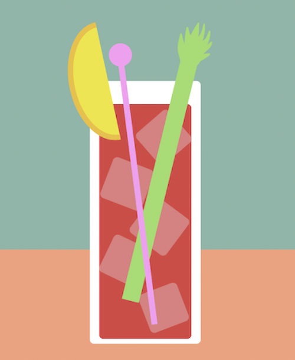

Bloody Mary

Ingrediensliste:
- 5 cl vodka
- 9 cl tomatjuice
- 1 cl citronsaft
- 5 ml Worcestershire sauce
- 4 ml tabasaco
- Salt
- Peber
- Bladselleri
- Agurk
- Isterninger
Om drinken:
Bloody Mary er nok en af verdens mest kendte cocktails, med evnen til at sætte gang i selv de sløveste morgener. Drinken kan ses som et lille måltid i sig selv, og en god måde at få noget alkohol i kroppen efter en hård bytur, for at holde de værste tømmermænd på bagen. Mange kan ikke forene sig med den tomatsuppeagtige drink, men er man fan, så er man fan!
Sådan gør du:
Bland vodka, tomatjuice, tabascosauce, Worecestershiresauce i en kande.
Pres saften af citronerne, og hæld det i kanden. Krydr med en lille smule salt og peber, og rør rundt i blandingen.
Skyl selleristilke, og skær dem i stave. Skyl agurken, og skær den i stave.
Fordel et par isterninger i hvert glas, og hæld drinken over. Sæt en selleristav og en agurkestav i hvert glas, og servér straks.